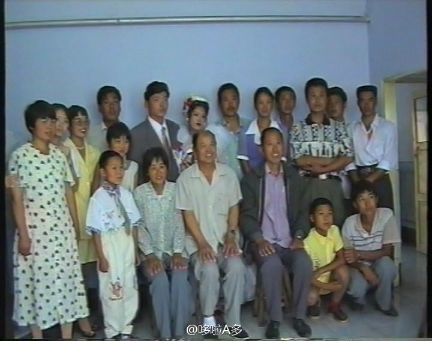

#眼保健操的代沟# 刚才听到马路对面的学校放的眼保健操的音乐，前面居然没有“为革命 保护视力 预防近视 眼保健操 开始……”，po主感到一阵悲凉啊！为什么没有，为什么没有？问了所有的同事，只有一个同事和我一样。同事们都说说我虚报年龄。大家小时候做的眼保健操都是什么样的，难道这也存在代沟？

李多多
2013-09-11

李多多
2013-09-11
那时候的一家人,15年前小姨结婚的录像带,终于倒出来了，现在看那时的我真小~镇黑。。还记得妈妈当年穿的衣服，纱料的~听说现在叫雪纺……有没有能找到我在哪儿的？
- 